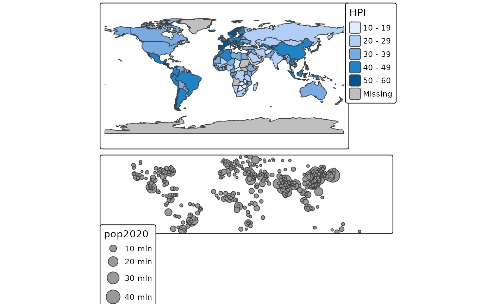

Arrange small multiples in a grid layout. Normally, small multiples are created by specifying multiple variables for one aesthetic or by specifying the by argument (see tm_facets). This function can be used to arrange custom small multiples in a grid layout.
tmap_arrange( ..., ncol = NA, nrow = NA, widths = NA, heights = NA, sync = FALSE, asp = 0, outer.margins = 0.02 ) knit_print.tmap_arrange(x, ..., options = NULL) # S3 method for tmap_arrange print(x, knit = FALSE, ..., options = NULL)
| ... |
|
|---|---|
| ncol | number of columns |
| nrow | number of rows |
| widths | vector of column widths. It should add up to 1 and the length should be equal to |
| heights | vector of row heights. It should add up to 1 and the length should be equal to |
| sync | logical. Should the navigation in view mode (zooming and panning) be synchronized? By default |
| asp | aspect ratio. The aspect ratio of each map. Normally, this is controlled by the |
| outer.margins | outer.margins, numeric vector four or a single value. If defines the outer margins for each multiple. If will overwrite the |
| x | a |
| options | options passed on to knitprint |
| knit | should |
The global option tmap.limits controls the limit of the number of facets that are plotted. By default, tmap_options(tmap.limits=c(facets.view=4, facets.plot=64)). The maximum number of interactive facets is set to four since otherwise it may become very slow.
data(World) w1 <- qtm(World, projection = "+proj=eck4", title="Eckert IV") w2 <- qtm(World, projection = 3857, title="Mercator") w3 <- qtm(World, projection = "+proj=gall", title="Gall stereographic") w4 <- qtm(World, projection = "+proj=robin", title="Robinsin") current.mode <- tmap_mode("plot")#>#>